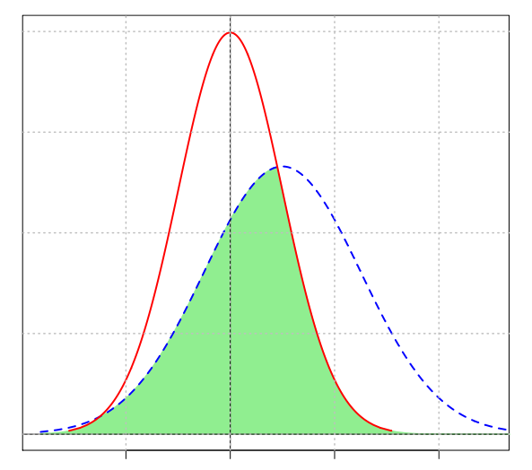

\(\rightarrow\) especially problematic when it comes to systematic review and meta-analytic methods (aiming to summarize research)
(Rothstein review 2005)
Any statistical test depends on four quantities :
(Coe 2002, Jamalzadeh 2010)
\[d = \frac{\bar{x_1} - \bar{x_2}}{\sigma}\]
\[s = \sqrt{\frac{(n_1 - 1) \cdot s_1^2 + (n_2 - 1) \cdot s_2^2}{n_1 + n_2 - 2}}\]
\[CLES = \Phi \left( \frac{\mu_y - \mu_x}{\sqrt{2} \cdot \sigma} \right)\]

\[NPES = \delta = \frac{\Sigma_{i=1}^{n_1} \Sigma_{j=1}^{n_2} sign(x_{i1} - x_{j2})}{n_1 \cdot n_2}\]
\[QAD = \int_0^1 |F^{-1}(p) - G^{-1}(p) | dp\]
\[DES = 2 \cdot \int_0^1 |G\{F^{-1}(p)\} - G\{G^{-1}(p)\} | dp\]
An effect size is exactly equivalent to a ‘Z-score’ of a standard Normal distribution. For example, an effect size of 0.8 means that the score of the average person in the experimental group is 0.8 standard deviations above the average person in the control group, and hence exceeds the scores of 79% of the control group.
If the effect size were 0 (i.e. the two groups were the same) then the probability of a correct guess would be exactly a half – or 0.50. With a difference between the two groups equivalent to an effect size of 0.3, there is still plenty of overlap, and the probability of correctly identifying the groups rises only slightly to 0.56. With an effect size of 1, the probability is now 0.69, just over a two-thirds chance.
If group membership is coded with a dummy variable (e.g. denoting the control group by 0 and the experimental group by 1) and the correlation between this variable and the outcome measure calculated, a value of r can be derived : \[r^2 = \frac{d^2}{(4+d^2)}\]
If the outcome measure is reduced to a simple dichotomy (for example, whether a score is above or below a particular value such as the median, which could be thought of as ‘success’ or ‘failure’), r can be interpreted as the difference in the proportions in each category.
For example, an effect size of 0.2 indicates a difference of 0.10 in these proportions, as would be the case if 45% of the control group and 55% of the treatment group had reached some threshold of ‘success’. Note, however, that if the overall proportion ‘successful’ is not close to 50%, this interpretation can be somewhat misleading (Strahan 1991, McGraw 1991).
Proportion of variance accounted for ?
\(r\) = correlation between two variables
\(R^2 = r^2\) = proportion of the variance in each that is ‘accounted for’ by the other proportion by which the variance of the outcome measure is reduced when it is replaced by the variance of the residuals from a regression equation (close analogies in ANOVA) \(\rightarrow\) sometimes advocated as a universal measure of effect size (e.g. Thompson, 1999) ?
BUT :
(Coe 2002)
To calculate a 95% confidence interval, you assume that the value you got (e.g. the effect size estimate of 0.8) is the ‘true’ value, but calculate the amount of variation in this estimate you would get if you repeatedly took new samples of the same size (i.e. different samples of 38 children). For every 100 of these hypothetical new samples, by definition, 95 would give estimates of the effect size within the ‘95% confidence interval’. If this confidence interval includes zero, then that is the same as saying that the result is not statistically significant. If, on the other hand, zero is outside the range, then it is ‘statistically significant at the 5% level’.
(Coe 2002)
If the effect size estimate from the sample is d, then it is normally distributed, with standard deviation :
\[\sigma[d] = \sqrt{\frac{N_e + N_c}{N_e \cdot N_c} + \frac{d^2}{2 \cdot (N_e + N_c)}}\] with \(N_e\) and \(N_c\) the numbers in the experimental and control groups.
Hence a 95% confidence interval for d would be from \((d - 1.96 \cdot \sigma[d])\) to \((d + 1.96 \cdot \sigma[d])\).
(Coe 2002)
When a particular experiment has been replicated, the different effect size estimates from each study can easily be combined to give an overall best estimate of the size of the effect = meta-analysis.
\(\rightarrow\) seeking relationships between effect sizes and characteristics, context and study design in which they were found \(\rightarrow\) even small studies can make a significant contribution to knowledge \(\rightarrow\) BUT danger of combining incommensurable results
(Coe 2002)
Hunt 1997 = accumulation of knowledge and research findings
Glass 1976 = the statistical analysis of a large collection of analysis results from individual studies for the purpose of integrating the findings
\(\Rightarrow\) if conditions fulfilled, advisable to combine both systematic review and meta-analysis in the same review process
Not easy to state the number of studies required
Minimize selection bias : use more than one database
Replicable : document the search strategy
Estimate the number of studies required with power analysis
Whether unpublished studies (dissertations, conferences, unpublished papers) should be included ?
3 common types of effect sizes :
\(\rightarrow\) if the research topic is related to experimental or between group comparisons, mean differences are usually used
\(\rightarrow\) it is possible to convert the effect sizes among odds ratio, mean difference and correlation coefficient (no need to exclude studies because of the difference in the reported effect sizes)
/!\ An effect size cannot be used in the analysis if its sampling variance is missing.
\[\text{Population effect size : } \beta_F = \frac{\Sigma_{i=1}^k w_i \cdot y_i}{\Sigma_{i=1}^k w_i}\] \[\text{Average population effect : } \beta_R\] with :
\(\Rightarrow\) Test of heterogeneity = are studies consistent (variation in findings compatible with chance alone), or not ? (consistency of the effect across studies)
\(\Rightarrow\) if random model : more studies are required, otherwise the estimated heterogeneity variance is not stable enough
\[Q = \Sigma_{i=1}^k w_i \cdot (y_i - \beta_F)^2\]
BUT low statistical power (detecting true heterogeneity)
\(\Rightarrow\) susceptible to the number of trials included
\(\Rightarrow\) not advisable to choose between fixed- vs random-effects models by relying on the significance test on Q statistic
\[ I^2 = 100\% \cdot \frac{Q - (k-1)}{Q}\]
BUT
An alternative quantification of heterogeneity in a meta-analysis is the among-study variance (often called tau2), calculated as part of a random effects meta-analysis. This is more useful for comparisons of heterogeneity among subgroups, but values depend on the treatment effect scale.